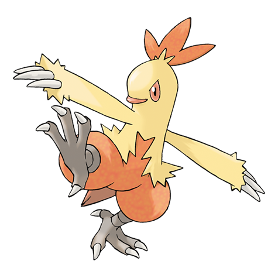

252. Treecko

Tipo: Planta
Tiene pequeñas púas en las plantas de los pies que le permiten andar por techos y paredes sin caerse
Habilidades: Espesura
253. Grovyle

Tipo: Planta
Los desarrollados músculos de sus extremidades inferiores le proporcionan una tremenda agilidad y una portentosa capacidad de salto.
Habilidades: Espesura
254. Sceptile

Tipo: Planta
Corretea ágil y veloz por la selva y emplea las afiladas hojas de sus brazos para darles el golpe de gracia a sus presas.
Habilidades: Espesura
255. Torchic

Tipo: Fuego
Posee una saca de fuego en el abdomen, cuya llama arderá durante toda su vida. El calor que desprende resulta muy agradable al abrazarlo.
Habilidades: Mar Llamas
256. Combusken
Tipo: Fuego, Lucha
Propina unas patadas demoledoras. Profiere potentes gritos para aguzar su concentración.
Habilidades: Mar Llamas
257. Blaziken

Tipo: Fuego, Lucha
Ante un rival difícil, expulsa llamas por las muñecas. Tiene mucha fuerza en las patas; hasta puede saltar edificios.
Habilidades: Mar Llamas
258. Mudkip

Tipo: Agua
Puede reducir a añicos grandes rocas. Descansa enterrado en el lodo del lecho de los ríos.
Habilidades: Torrente
259. Marshtomp

Tipo: Agua, Tierra
Vive en terrenos cubiertos de lodo viscoso, lo que contribuye a que sus patas se fortalezcan y se vuelvan extremadamente robustas.
Habilidades: Torrente
260. Swampert

Tipo: Agua, Tierra
Con sus brazos duros como una roca puede partir pedruscos gigantescos en mil pedazos de un solo golpe.
Habilidades: Torrente